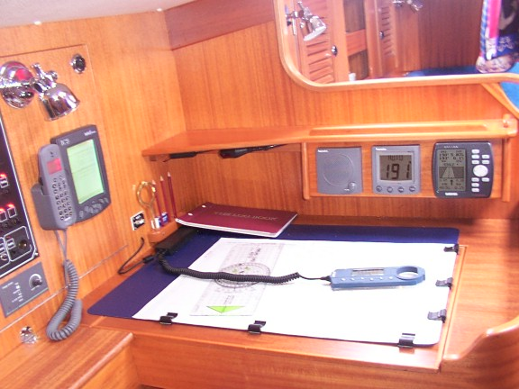
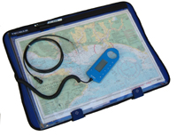

1985
Yeoman Group plc (later Precision Navigation Ltd, UK)
Yeoman Navigator / Sport Electronic Plotter
A wire-impregnated chart table that guides your hand by four LEDs to the vessel's live position

Overview
Deep dive
Team & pioneers
- Yeoman Group plc. British manufacturer of the Yeoman plotter range from 1985.
- Precision Navigation Ltd. East Anglian firm that continued manufacturing after 2004; production ceased circa 2014–15.
Media
